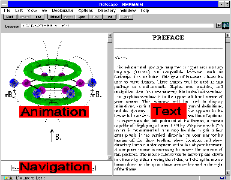

PREFACE
HELP!
This educational package requires a hyper text markup language (HTML) 3.0 compatible browser,
such as Netscape Communicator 4.0x or later, or Microsoft Internet Explorer 3.0x or later.
This type of browser allows the user to view frames.
Three frames will be used in this package to simultaneously display text, graphics, and navigation aids.
You are reading this in the text window.
The graphics window is in the upper left hand corner of your screen.
This window will be used to display animations, static figures, references, symbol definitions, and the glossary.
The navigation window appears in the lower left corner of the screen and has one line of options.
To experience the full potential of the frames, a screen capable of displaying at least 1024 by 768 pixels with 256 colors is recommended.
You may be able to gain a few extra pixels in the vertical direction on your monitor by turning off the show toolbar, show location, and show directory buttons under options at the top of your browser.
A computer mouse is necessary to access the contents of this package.
The mouse allows you to move up and down in a frame by either moving the slider, or holding the mouse button down on the up or down arrows located at the right of the frame.

Netscape Navigator 7 no longer support the font face=”symbol” html command.
As a consequence, some Greek characters may appear in your browser’s default font.
Microsoft Internet Explorer 6 and earlier versions of Netscape support this command.
Organization
This package is organized into 11 chapters.
These eleven chapters may be accessed by clicking on the chapter title in the table of contents with the mouse.
Each chapter has several sub sections.
The titles of the sub sections are listed at the top of each chapter.
The text of the chapter contains several underlined references to chapters in this book.
Clicking on one of these will bring up the location in the new chapter containing the reference material.
There are 50 terms defined in the glossary and 65 symbols in a list of symbols.
Clicking on one of these will bring up the location in the new chapter containing the reference material.
Both the symbols and glossary can be viewed in their entirity in the graphics window by clicking on them in the table of contents.
Each entry in the glossary contains a chapter reference.
By clicking on this reference you will bring up the chapter where the glossary entry is defined or first used.
This feature therefore makes the glossary also serve as an index.
You may further search for a term in a chapter with the edit find command of your browser.
Clicking on a reference symbol ( ) brings up a reference in the graphics window. You may view the entire list of references by clicking on the references entry in the table of contents. The text contains several start (
) brings up a reference in the graphics window. You may view the entire list of references by clicking on the references entry in the table of contents. The text contains several start ( ) and play (
) and play ( ) icons. These icons display images, figures, and animation in the animation/graphics window. The start icon displays single frame images and figures, while the play icon displays an animation. The bottom of each text page contains markers to send you to the top of the current chapter, back one chapter, and ahead one chapter. There are occasional references to previous and future chapters in the text. When the word chapter and the accompanying number are underlined you may click on the word and go directly to that chapter.
) icons. These icons display images, figures, and animation in the animation/graphics window. The start icon displays single frame images and figures, while the play icon displays an animation. The bottom of each text page contains markers to send you to the top of the current chapter, back one chapter, and ahead one chapter. There are occasional references to previous and future chapters in the text. When the word chapter and the accompanying number are underlined you may click on the word and go directly to that chapter.
The content of this package has been organized so that background material and underlying principles are introduced first in separate chapters. Each chapter builds on the previous one. The very knowledgeable student may elect to skip these chapters; however this is discouraged as often times nomenclature, conventions, and symbols are introduced in these introductory chapters.
One of the best aspects of web-based publications is their ability to be updated immediately, without waiting for a new edition to be published. The Basics of NMR is periodically updated with new material. Major revisions are indicated by a Roman numeral located at the bottom of the second title page.
Acknowledgements
The idea for this package grew out of earlier Microsoft DOS based educational packages on nuclear magnetic resonance spectroscopy, and a hypertext book on MRI entitled The Basics of MRI.
Some of the figures used in this package were prepared by Dmitriy Beryoza, Ann Cecchi, Manish Kadaki, and Dimitrios Psarros. The cover design is by Elizabeth Jurkowski. Special Thanks to Professor Leslie J. Schwartz of St. John Fisher College for critically reviewing early drafts of this work.
Copyright
Copyright © 1997-2017 J.P. Hornak. All Rights Reserved.
No part of this educational package may be reproduced, stored in a retrieval system, or transmitted, in any form or by any means: digital, electronic, mechanical, recording, or otherwise,without the prior written permission of the author, Joseph P. Hornak, Center for Imaging Science, Rochester Institute of Technology, Rochester, NY 14623-5604.
The Basics of NMR was created as a private undertaking without commercial or government support.
The material in The Basics of NMR is made available for viewing on the web at no charge.
It is therefore our policy to charge commercial endeavors for a nonexclusive right to use material from The Basics of NMR.
For information on the use of material from The Basics of NMR, please send your request to the author.
A license for this software package may be purchased so you may have a copy for use on your own computer.
This will eliminate network download delays associated with accessing the software from our location.
Please see Software License in the Table of Contents for details.
Small Monitor
Some users of The Basics of NMR have experienced difficulty viewing the material in the fixed frame format on 12 or 13 inch, low resolution monitors. If you are one of these users, please open the table of contents (contents.htm) in a new browser window. Text and animation will then appear in separate sessions/windows.
Go to the: [ cover ]
Copyright © 1997-2017 J.P. Hornak.
All Rights Reserved.